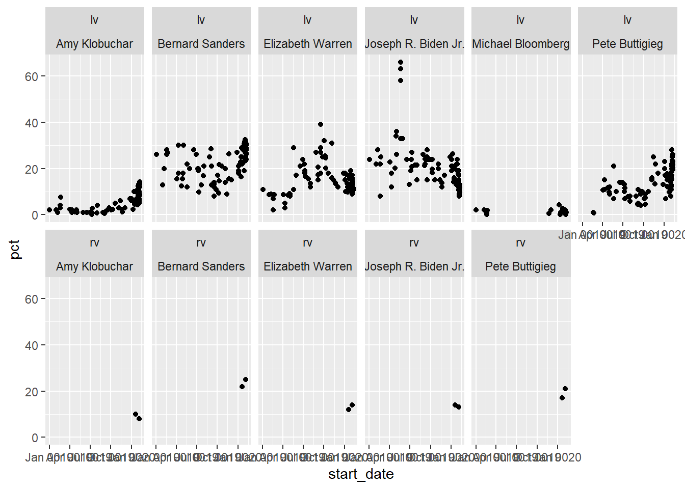
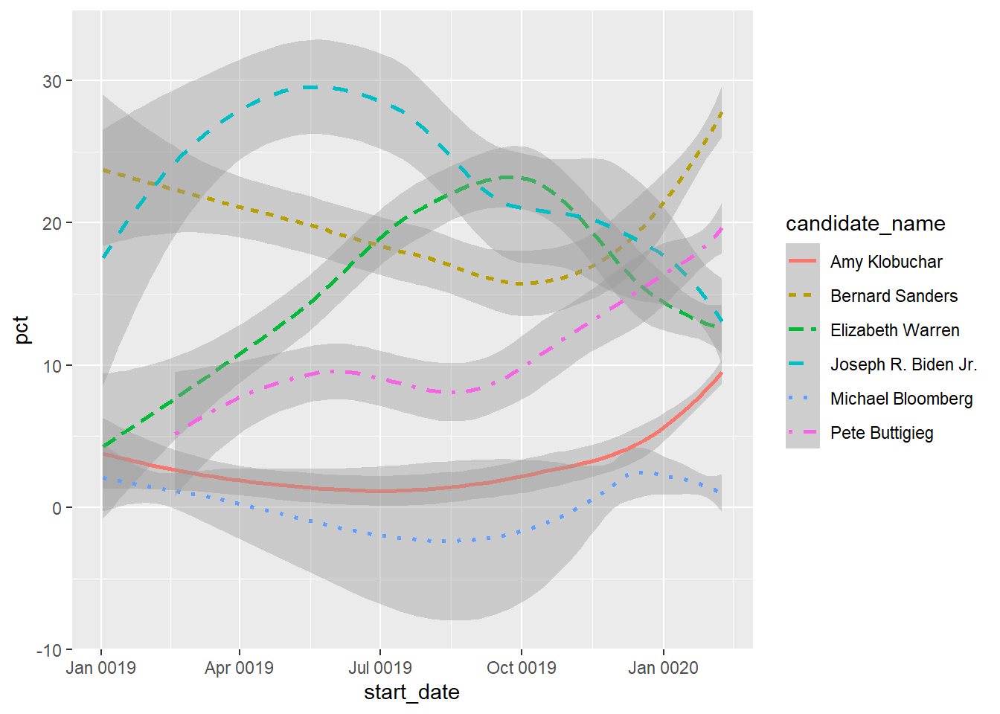

6 Data Visualization in R
6.1 Intro to ggplot2
ggplot2is a powerful way to build both simple and complex data visualizations- Takes care of a lot of the stupid aspects of plot building
- Provides a language for layering visual elements
- Has been extended in dozens of ways to handle all kinds of data
- Integrates easily into the rest of the tidyverse
6.1.1 Example
Data comes from 538.com
library(ggplot2)
primaryPolls<-read.csv('https://jmontgomery.github.io/PDS/Datasets/president_primary_polls_feb2020.csv', stringsAsFactors = F)
primaryPolls$start_date<-as.Date(primaryPolls$start_date, "%m/%d/%Y")
primaryPolls<-primaryPolls[primaryPolls$state=="New Hampshire",]
primaryPolls<-primaryPolls[primaryPolls$candidate_name%in%c("Amy Klobuchar", "Bernard Sanders", "Elizabeth Warren", "Joseph R. Biden Jr.", "Michael Bloomberg", "Pete Buttigieg"),]- The first line is always
ggplot, which sets up the basic object that we will layer onto - Then we use the
+to add layers. In this casegeom_points. THe+must be at the end of each line - not the beginning. - Any
geomlayer requires amappingargument, which itself comes with anaesargument explaining what goes on the x and y coordinates. - Conveniently, the dataset only needs to be specified once.
6.1.2 Aesthetics
- The
aesstands for aesthetics.
- The nice part is we can easily make this more comlex
- And
ggplothas pretty good defaults to handle things like color choices, legends, etc.
- Note that
ggplotautomatically chose a unique color.
- It can do the same with shapes, point size, and transparency (alpha).
- alpha = 1 is completely opaque, alpha = 0.2 would be almost entirely see-through
- You can also set aesthetic characteristics manually (as I do with alpha here)
- Note that shapes only works by default with 6 categories
6.1.3 Facets
- Perhaps most helpfully we can parse the data by features using a simple line
ggplotwill then arrange everything else so it looks pretty OK
ggplot(data=primaryPolls)+
geom_point(mapping = aes(x=start_date, y=pct)) +
facet_wrap(~ candidate_name, nrow=4)You can also make a grid of plots, one dimension has each population level and the other has the candidate names
ggplot(data=primaryPolls)+
geom_point(mapping = aes(x=start_date, y=pct)) +
facet_wrap(population ~ candidate_name, nrow=2)
6.2 More geom options
ggplot(data=primaryPolls)+
geom_smooth(mapping = aes(x=start_date, y=pct, color=candidate_name)) +
facet_wrap(~ candidate_name, nrow=2)## `geom_smooth()` using method = 'loess' and formula 'y ~ x'ggplot(data=primaryPolls)+
geom_smooth(mapping = aes(x=start_date, y=pct, color=candidate_name)) +
geom_point(mapping = aes(x=start_date, y=pct, color=candidate_name), alpha=.4) +
facet_wrap(~ candidate_name, nrow=2)## `geom_smooth()` using method = 'loess' and formula 'y ~ x'ggplot(data=primaryPolls)+
geom_smooth(mapping = aes(x=start_date, y=pct, color=candidate_name, linetype=candidate_name))## `geom_smooth()` using method = 'loess' and formula 'y ~ x'
- ANd maybe we don’t want a legend?
## `geom_smooth()` using method = 'loess' and formula 'y ~ x'ggplot(data=primaryPolls)+
geom_smooth(mapping = aes(x=start_date, y=pct, color=candidate_name), show.legend=FALSE)## `geom_smooth()` using method = 'loess' and formula 'y ~ x'- We can combine multiple
geomobjects
ggplot(data=primaryPolls)+
geom_smooth(mapping = aes(x=start_date, y=pct, color=candidate_name))+
geom_point(mapping = aes(x=start_date, y=pct, color=candidate_name), alpha=.4)## `geom_smooth()` using method = 'loess' and formula 'y ~ x'- But we can also do this in a way easier to change (less copying and pasting)
ggplot(data=primaryPolls, mapping=aes(x=start_date, y=pct, color=candidate_name))+
geom_smooth()+
geom_point(alpha=.4)## `geom_smooth()` using method = 'loess' and formula 'y ~ x'
- And you can add specifics elments to a sub-layer
ggplot(data=primaryPolls, mapping=aes(x=start_date, y=pct, color=candidate_name))+
geom_smooth()+
geom_point(aes(size=sample_size), alpha=.4)## `geom_smooth()` using method = 'loess' and formula 'y ~ x'
- A lot of other options you are interested require knowing the right
geomfunction
- This is also the same as counting the number of obserervations in each bin

- This is also the same as counting the number of obserervations in each bin
ggplot(data=primaryPolls, mapping=aes(x=candidate_name, y=pct))+
stat_summary(
fun.ymin=min,
fun.ymax=max,
fun.y=median
)## Warning: `fun.y` is deprecated. Use `fun` instead.## Warning: `fun.ymin` is deprecated. Use `fun.min` instead.## Warning: `fun.ymax` is deprecated. Use `fun.max` instead.- You can also flip the coordinate system fairly quickly